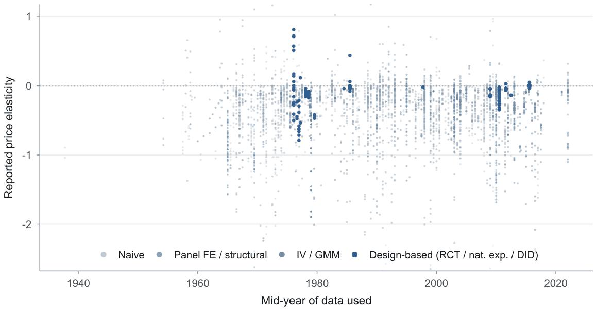
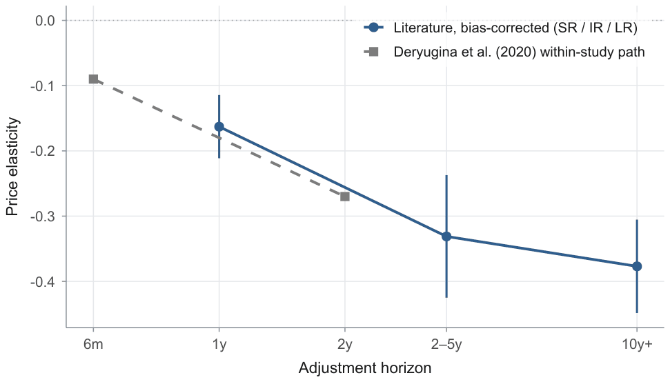
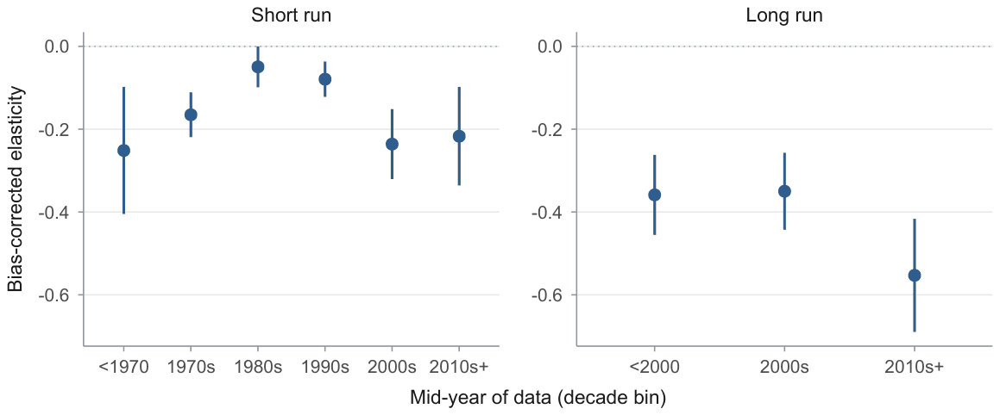
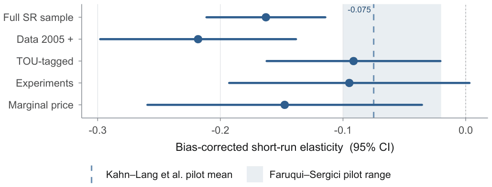

Total electricity consumption has not become more price-sensitive despite ninety years of technological change
Peter Kudela, Tomas Havranek, Zuzana Irsova, Anna Kudelova, Vojtech Sikl (2026), “Total electricity consumption has not become more price-sensitive despite ninety years of technological change.” Charles University, Prague. Available at meta-analysis.cz/electricity.
Peter Kudela 1, Tomas Havranek 1,3,4, Zuzana Irsova 1,2,3, Anna Kudelova 1, and Vojtech Sikl 1
1 Charles University, Prague
2 Anglo-American University, Prague
3 Meta-Research Innovation Center, Stanford
4 CEPR, London
November 16, 2026
The data and code required to replicate all results, together with the Supplementary Information, are available at https://meta-analysis.cz/electricity and archived at Zenodo (https://doi.org/10.5281/zenodo.23060098). Kudela acknowledges support from the Grant Agency of Charles University (grant 120124); Irsova acknowledges support from the Czech Science Foundation (grant 24-11583S). We thank Carol Dahl for generously sharing her earlier data. Corresponding author: Zuzana Irsova, zuzana.irsova@fsv.cuni.cz. All remaining errors are ours.
Abstract
Energy planners have long assumed that electricity demand will grow more price-sensitive as metering, automation, and storage spread, an assumption now embedded in decarbonization plans. We test it against the empirical record: 4,720 estimates of the own-price elasticity of total electricity consumption (the level response, not intraday load-shifting or peak demand response) from 462 studies, with data spanning 1934–2024. We classify the estimates on a ladder of identification quality that runs from naive regressions to randomized experiments. Three findings emerge. First, the best-identified studies find smaller responses than naive regressions do. Corrected for publication bias, the short-run elasticity is about −0.16 across the literature (a 10% rise in the electricity price cuts consumption by under 2%) and only −0.09 among the best-identified studies, whose adjusted value is statistically indistinguishable from zero. Second, price sensitivity grows with time to adjust, more than doubling from −0.16 in the short run to −0.38 in the long run as the capital stock turns over, and this gradient has not steepened over the decades. Third, and most important, price sensitivity shows no upward trend over the decades that the data cover. If anything, the most technology-rich settings, including time-of-use pricing, are the least price-sensitive in total consumption, a level metric that is silent by construction on the intraday flexibility such settings are designed to deliver. Total electricity consumption has not become more price-sensitive as these technologies spread; broader demand flexibility will have to be engineered and paid for, through enabling technology, contracts, and program design.
Keywords: electricity demand, price elasticity, meta-analysis, identification, publication bias, demand flexibility
JEL codes: Q41, Q48, C18
1. Introduction
Surveying, in 1981, the fifteen residential time-of-use pricing experiments the U.S. Department of Energy had run since 1975, Dennis Aigner recorded the profession's expectation: with a full commitment to time-varying prices, "appliance choices will be made with an eye to TOU response; new appliances will become widely available," and the pricing strategy "surely must be even more desirable in the long-run" (Aigner, 1985, p. 39). Four decades later, a recent working paper synthesizing time-based electricity rates returns to the same expectation, now attached to decarbonization. Time-based rates "may be a useful and efficient tool for encouraging demand-side flexibility" in the transition to a high-renewable grid, and how the response will change "with widespread adoption of emerging technologies" is a question the authors leave open (Kahn-Lang et al., 2025). Between these two statements, the assumption that the price responsiveness of electricity demand is about to rise has underwritten smart-metering business cases (Faruqui & Sergici, 2010), demand-response program design (Torriti, 2014), and the demand-side assumptions of energy-system models (Huntington et al., 2019). The assumption matters for planning. If demand responds strongly to prices, decarbonized power systems need less storage and less firm capacity; if it does not, plans that rely on flexible demand will fall short.
The assumption is testable, yet the sources that state it do not estimate a time trend in price responsiveness (Table S3 records it in their words). The premise bundles two responses to price: shifting use across the hours of the day, and changing total use. Our object is the second, the own-price elasticity of total consumption, which is also the parameter that energy-system models extrapolate. Load shifting largely nets out in total consumption, so we neither measure nor bound it. We bring the empirical record to bear on the premise: 4,720 own-price elasticity estimates from 462 studies, with underlying data spanning 1934–2024. To our knowledge this is the largest dataset assembled on the price elasticity of electricity demand. It is designed so that the question "has responsiveness changed?" can be separated from the two confounds that would otherwise contaminate the answer.
The first confound is identification. Reported elasticities depend on how a study confronts the simultaneity of price and quantity: tariff schedules respond to consumption, regulators respond to demand growth, and average prices constructed from bills divide revenue by the quantity being explained (Alberini & Filippini, 2011; Ito, 2014). A literature whose identification standards improve over time will exhibit spurious elasticity "trends" driven by changing methods rather than changing behavior. We therefore place the estimates on a single identification ladder, running from design-based studies at the top (randomized experiments, mandated natural experiments, and difference-in-differences) down through instrumented specifications, panel fixed effects, and naive regressions, in the spirit of the design-quality tiers that Kahn-Lang et al. (2025) apply to pricing pilots. The second confound is selective reporting. Statistically significant, correctly signed elasticities are easier to publish, which correlates estimates with their standard errors and inflates naive averages (Stanley et al., 2008; Ioannidis et al., 2017; Brodeur et al., 2020). If selection pressure has itself drifted over time, so has the visible literature, independently of consumers. We therefore run modern selection corrections within tiers and horizons, and we separate two clocks that previous surveys usually conflated: the vintage of a study's data (do consumers behave differently?) and the study's publication date (does the literature report differently?).
Three findings emerge. First, credibility shrinks the elasticity. From the bottom of the ladder to the top, the raw mean short-run elasticity falls in magnitude from −0.37 among naive regressions to −0.09 among design-based estimates. An elasticity of −0.37 means a 10% rise in the electricity price cuts consumption by under 4%; at −0.09 the same rise cuts it by under 1%. Both responses are small relative to the price change, but the gap between them is large: the design-based mean is about a quarter of the naive one. Once observable study characteristics are held fixed, the design-based tier is statistically indistinguishable from zero (+0.02, [−0.15, 0.19]) and significantly less elastic than the naive baseline (). The instrumented tier, by contrast, is the one identification upgrade that remains as elastic as the naive literature (−0.20 adjusted, against −0.24 naive): instrumenting produces little of the movement toward the experimental benchmark seen elsewhere on the ladder, and its difference from the naive tier is not statistically significant (). Selective reporting differs sharply across the tiers. The short-run literature as a whole shows pronounced funnel asymmetry (FAT = −0.85, ), while the design-based sample shows none (), although with only eight studies that test has little power. The corrected short-run elasticity is small: bias-corrected estimates range from −0.04 to −0.23 across the main correction methods, with our preferred estimate at −0.16.
Second, responsiveness grows with adjustment time, not with calendar time. The bias-corrected elasticity more than doubles from the short run (−0.16) to the long run (−0.38). The gradient is consistent with the within-study adjustment path that Deryugina et al. (2020) recover from a municipal-aggregation natural experiment, where the elasticity triples from −0.09 after six months to −0.27 after two years. It is also consistent with the mechanism that Costa & Kahn (2011) identify in the housing stock: the long-run response operates through durable capital, so it arrives with the turnover of buildings and appliances and plateaus at the substitution possibilities the stock allows. The gradient has not steepened across eras of data: in every era since the mid-1970s the corrected long-run value has sat between −0.29 and −0.47. The long-run response has already arrived, at about −0.38, well short of −1, the unit-elastic benchmark at which a price rise cuts consumption proportionally.
Third, the elasticity shows no trend in the data vintage. The short-run trend per decade of data is statistically indistinguishable from zero in every linear specification on the full span of the data: the raw record, the precision-controlled record, and the fully adjusted record (both the data and publication clocks plus identification and composition moderators). The null does not merely reflect noise. In the specifications precise enough to be informative, even the outer edge of the 95% interval reaches only about two-thirds to four-fifths of the way to a doubling of responsiveness over three decades, the benchmark we use for the flexibility premise. The point estimate in the fully adjusted specification leans toward less elastic demand (+0.017 per decade, ). The profile is not flat: the elasticity dips in the 1980s and 1990s and then returns, so a window that starts in 1980 shows a rise in the simple specifications, which the composition controls reduce to insignificance. Estimates from time-of-use settings, the environments at the heart of the flexibility premise, are closer to zero than the rest of the literature (coefficient +0.14, ). The design-based and time-of-use cells are also consistent with the pilot-experiment literature: the −0.02 to −0.10 range of Faruqui & Sergici (2010) and the −0.075 average of Kahn-Lang et al. (2025). The level elasticity is silent on the load shifting that time-of-use rates are designed to produce.
This exercise is a descriptive cross-study audit of a literature, anchored by design-based benchmarks and within-study contrasts where they exist. No individual study spans ninety years or six identification tiers, so only a pooled reading of the whole record can ask whether the corrections the literature trusts reproduce what clean designs deliver, and whether the parameter planners extrapolate has ever moved. Our contribution is therefore a credibility audit of the assumption that the consensus elasticity is about to change, in the tradition of meta-research on selective reporting and the reliability of empirical economics (Ioannidis et al., 2017; Brodeur et al., 2020; DellaVigna & Linos, 2022; Christensen & Miguel, 2018).
Prior syntheses have examined the individual pieces but not the question itself. Espey & Espey (2004) include publication-year and data-vintage dummies in a 36-study sample and find drift. Labandeira et al. (2017) report, in a single sentence, that a technical-progress trend "is not significant at any level in any given specification." Zabaloy & Viego (2022) find significant data-vintage drifts of opposite signs for short- and long-run elasticities in Latin America. Zhu et al. (2018) bin studies by period without correcting for publication bias, and the surveys of Dahl (1993, 2011), Fatima (2023), and Marques et al. (2024) report static summaries. None makes the time path its central question, and none examines it with bias correction, identification controls, and clustered inference together. Only Espey & Espey (2004) separate the data clock from the publication clock, a separation that, on our corpus, can account for the contradictory findings of these syntheses.
The paper proceeds as follows. Section 2 describes the corpus and the three central variables. Section 3 compares estimates across the identification ladder. Section 4 audits selective reporting along it. Section 5 estimates the adjustment-horizon path. Section 6 runs the calendar-time test and states the bound. Section 7 translates the results into the numbers planners and modelers should use. Section 8 concludes.
2. Data
Corpus.
We collect estimates of the own-price elasticity of electricity demand together with their standard errors from published studies and working papers. The final dataset contains 4,720 estimates from 462 studies (listed in Supplementary appendix S2), each reporting a usable measure of uncertainty. Our inclusion rule is deliberately simple: an estimate enters only if it reports a standard error, or a -statistic or -value from which one can be recovered; an estimate without any such measure cannot be corrected for publication bias and is excluded. A small number of estimates are methodologically borderline (notably: the construction-vintage elasticity of Costa & Kahn, 2011; a separate, author-disavowed wrong-signed estimate; and an aggregate event-study elasticity); they carry a usable standard error and so meet our inclusion rule, and are individually immaterial at this sample size. Publication dates run from 1951 to 2026; the underlying data run from 1934 to 2024 (median data mid-year 1988; Figure 1). Each estimate carries 55 coded characteristics covering the data (country, sector, aggregation, frequency), the demand model (functional form, dynamics, controls), the price variable (average, marginal, time-of-use), the estimation method, and the publication outlet.
Our baseline sample places all comparable own-price elasticities on a common Marshallian (uncompensated) footing: the 3,324 estimates from 366 studies (1,647 short-run, 954 intermediate-run, 723 long-run) that carry a usable standard error and are either reported directly as Marshallian or converted from a compensated (Hicksian) estimate. The conversion applies the Slutsky relation with an electricity budget share of , of the order of the electricity share of household spending in consumer expenditure surveys (U.S. Bureau of Labor Statistics, 2024), and each estimate's own income elasticity at the matching horizon. Because is small, the conversion shifts the typical estimate by roughly 0.01. We keep the reported standard errors and do not propagate the uncertainty of the income elasticity, which matters only for a few very precisely estimated elasticities. The directly reported and the converted estimates can therefore be read on a single scale.
Restricting to the 2,579 directly reported Marshallian estimates alone (the pure-Marshallian sample; Supplementary appendix S4) leaves every headline result unchanged, as does varying between 0.02 and 0.08. A further 1,396 corpus estimates are held out of the baseline, either not convertible to the Marshallian footing or with an indirectly derived elasticity or standard error (Supplementary appendix S1); Table S6 shows they are statistically indistinguishable from it. Effects and standard errors are winsorized at 1% throughout, and main-text inference clusters at the study level, with the model-averaging and full-battery appendices (Supplementary appendix S6, Supplementary appendix S5) additionally clustering two-way, by study and by underlying database. At the extremes of no winsorization and 5%, the bias-corrected short-run estimate is −0.1696 and −0.1683, the long-run estimate −0.4639 and −0.3572, so the 1% choice drives none of the headline conclusions.
Period-specific estimates.
Our object is the elasticity of total consumption, but the corpus is not confined to it. The baseline sample contains 210 short-run estimates from 19 studies of time-of-use tariffs, some of which measure consumption within a pricing period, and 16 estimates from a critical-peak-pricing experiment (Jessoe & Rapson, 2014). We keep them, flagged, in the baseline. Excluding them leaves the short-run elasticity, the trend, and the ladder contrast essentially unchanged (Table S5 in Supplementary appendix S4).
The identification ladder.
The key variable is the price-identification strategy of each estimate, coded on a six-tier ladder: (1) randomized experiments and randomized encouragement designs; (2) mandated natural experiments with exogenous price variation; (3) difference-in-differences designs; (4) instrumented specifications (IV, 2SLS/3SLS, GMM); (5) panel fixed effects and structural demand systems without instrumentation; (6) naive time-series or cross-section regressions with no attempt to address price endogeneity. Coding rules and study-level examples appear in Supplementary appendix S3. Because tiers 1–3 are thin in this literature (119, 10, and 26 estimates respectively), we group them as design-based throughout the main text; 877 estimates whose strategy cannot be classified from the primary study are excluded from ladder analyses and retained elsewhere. In the coded corpus, sixteen studies report estimates on more than one tier.
Adjustment horizon and the two clocks.
Each estimate is classified as short-run (within roughly a year), intermediate-run, or long-run, using the primary study's own labels where given and the model structure otherwise (static single-equation estimates on levels with cointegration pre-tests are long-run; dynamic models contribute both a short- and a long-run estimate). We treat the horizon as an object of interest in its own right: Section 5 estimates the elasticity as a function of it.
Finally, every estimate carries two dates: the mid-year of the data used (the data clock; 23 estimates with no reported data years are assigned publication year minus three) and the publication year (the publication clock). The first records when consumers were observed; the second also moves with publication practices, methodological fashion, and selection pressure. Most previous surveys used one or the other; Section 6 uses both at once.

Notes: Reported own-price elasticities against the mid-year of the underlying data, colored by identification tier; the 3,843 tier-classified estimates with usable standard errors are shown, the vertical axis truncated at [−2.5, 1] so that 44 outlying estimates fall outside the frame; these outliers are omitted from the figure only and kept in every analysis (unclassified estimates are likewise omitted from the plot but not from non-ladder analyses). Two features organize the paper: the raw record shows no visible drift over nine decades, and the design-based literature (dark blue) arrives late and thin (8 studies contribute short-run design-based estimates), so composition must be held fixed before any trend is read as behavior.
3. The identification ladder
Does the elasticity survive scrutiny of its identification? Table 1 lines the short-run literature up along the ladder, and Figure S3 in Supplementary appendix S1 plots its adjusted column. The unadjusted column reports the raw mean within each tier. The adjusted column reports the conditional mean from a single precision-controlling meta-regression of the elasticity on its standard error (absorbing small-study effects), tier indicators, and a common set of study characteristics (sector, price measurement, data structure, region, demand controls, functional form). It is evaluated at a zero standard error with the other characteristics at sample means, with study-clustered 95% intervals. The comparison is descriptive: which design a study uses is not randomly assigned, so differences across tiers may also reflect differences in settings. The design-based tier earns its weight from the credibility of its designs, but its contrast with the other tiers remains a cross-study one.
| Tier | N | Studies | Unadjusted | Adjusted | 95% CI |
|---|---|---|---|---|---|
| Design-based (RCT/nat. exp./DID) | 81 | 8 | −0.091 | 0.022 | [-0.15, 0.19] |
| Instrumented (IV/GMM) | 549 | 52 | −0.304 | −0.195 | [-0.25, -0.14] |
| Panel FE / structural | 655 | 98 | −0.209 | −0.126 | [-0.18, -0.08] |
| Naive | 316 | 70 | −0.365 | −0.238 | [-0.31, -0.17] |
Notes: The table presents the short-run price elasticity by identification tier. Headline sample (Marshallian-equivalent, usable SE), short run; 1,601 estimates from 220 studies enter the adjusted regression (tier-classified subset). Unadjusted is the raw mean within the tier. Adjusted is the conditional mean from one meta-regression of the elasticity on its standard error, tier indicators (naive omitted), and study characteristics, evaluated at SE = 0 and characteristics at sample means; 95% study-clustered intervals. Relative to naive, the design-based shift is +0.260 (), the fixed-effects shift +0.112 (), the IV shift +0.043 (). RCT, randomized controlled trial; nat. exp., natural experiment; DID, difference-in-differences; IV, instrumental variables; GMM, generalized method of moments; FE, fixed effects.
The pattern is a gradient with one exception. Raw means fall in magnitude from −0.37 (naive) to −0.09 (design-based). Adjusted, the design-based tier sits at +0.02 with an interval of [−0.15, 0.19] and is significantly less elastic than the naive baseline. That interval is wide: it is consistent with no response at all and with a response nearly as large as the corrected full-sample value. In the menu (Table 5), −0.09 is the raw and PET value and +0.02 the composition-adjusted prediction. The exception is instrumenting. The IV tier is the only identification upgrade that stays as elastic as the naive literature after adjustment (−0.20 against −0.24 naive): it is statistically indistinguishable from naive and overshoots the design-based benchmark. Within the sixteen studies that report estimates on more than one tier, a similar pattern appears. The within-study contrast between the cleaner and the lower tier, pooled across horizons, averages −0.08 (cleaner estimates more elastic, driven by IV-versus-naive pairs), but it is small relative to its dispersion () and positive in half the studies. This within-study evidence is underpowered, so we report it for completeness without leaning on it (Figure S4 in Supplementary appendix S4 plots every contrast). None of the contrasts involves a design-based estimate, so they bear on the IV and fixed-effects ranking and not on the design-based benchmark. The argument therefore depends on the cross-study ladder and the funnel evidence of the next section.
Two readings of the IV overshoot are possible, and the data cannot separate them here. Instruments may correct attenuation from classical average-price measurement error (Alberini & Filippini, 2011), legitimately raising magnitudes; or weak instruments and specification search may inflate them. Ito (2014) shows that consumers respond to average price, which makes the average-price coefficient a behaviorally relevant object in its own right and weakens the attenuation-correction reading. What the short-run ladder does show is the direction that matters for the flexibility debate: no identification upgrade makes demand look more price-responsive than the naive literature already claims, and the best designs point toward less responsiveness.
Price measurement provides a second check on the ladder. Average-price estimates carry classical division bias and inflated standard errors; marginal-price estimates are cleaner but scarcer. Bias-corrected short-run elasticities are −0.15 (marginal price) and −0.17 (average price): the two differ by only two hundredths, although the comparison is across studies and does not isolate the effect of price measurement.
4. Selective reporting along the ladder
A meta-analysis that ignores selective reporting conflates the literature's publication preferences with the underlying parameters (Stanley et al., 2008; Ioannidis et al., 2017). The concern is concrete here: intuitive negative elasticities and statistically significant elasticities are easier to publish, which leaves a correlation between estimates and standard errors that funnel-based estimators detect and net out.
| Sample | N | Studies | Mean | PW | PET | PEESE | WAAP |
|---|---|---|---|---|---|---|---|
| Long-run elasticities (full sample) | 723 | 151 | −0.583 | −0.378 | −0.377 | −0.498 | −0.376 |
| Intermediate elasticities (full sample) | 954 | 108 | −0.440 | −0.149 | −0.331 | −0.416 | −0.148 |
| Short-run elasticities (full sample) | 1,647 | 226 | −0.267 | −0.114 | −0.163 | −0.231 | −0.111 |
| Short-run, design-based | 81 | 8 | −0.091 | −0.078 | −0.095 | −0.114 | −0.080 |
| Short-run, instrumented (IV) | 549 | 52 | −0.304 | −0.104 | −0.203 | −0.276 | −0.102 |
| Short-run, panel FE / structural | 655 | 98 | −0.209 | −0.150 | −0.088 | −0.164 | −0.151 |
| Short-run, naive | 316 | 70 | −0.365 | −0.108 | −0.245 | −0.318 | −0.106 |
| Short-run, marginal price | 401 | 48 | −0.301 | −0.054 | −0.148 | −0.230 | −0.049 |
| Short-run, average price | 1,030 | 166 | −0.264 | −0.107 | −0.168 | −0.236 | −0.105 |
| Short-run, preferred only | 426 | 191 | −0.302 | −0.159 | −0.182 | −0.271 | −0.158 |
Notes: The table presents the publication-bias battery by horizon and tier. Headline sample; the full-sample rows pool all estimates at each horizon, below which the short-run sample is split by tier and by price regime. Mean is the raw mean; PW the precision-weighted mean; PET and PEESE the funnel-asymmetry-corrected estimates (Stanley, 2005; Stanley et al., 2008); WAAP the weighted average of adequately powered estimates (Ioannidis et al., 2017). Study-clustered inference. FAT -values for the asymmetry test: short-run all < 0.001; design-based 0.96; marginal-price subsample 0.001. "Preferred only" uses the estimates flagged as preferred by the original studies (426 estimates from 191 studies). The sample-size-weighted corrector on the short-run full sample (1,647 estimates with a usable weight) gives −0.04 (se 0.032), the range's low end.
Table 2 reports the main battery of tests. First, selection is real and it inflates. The short-run funnel-asymmetry test rejects strongly (FAT = −0.85, ), and every corrector pulls the raw mean of −0.27 toward zero: to −0.16 (PET), −0.23 (PEESE), −0.11 (WAAP), −0.10 (top decile by precision), and −0.04 (sample-size weighted; se 0.032; 1,647 estimates). A fuller battery in Supplementary appendix S5, which adds among others the MAIVE estimator of Irsova et al. (2025), -uniform* (van Aert & van Assen, 2026), and a selection model (Andrews & Kasy, 2019), stays between −0.09 and −0.24. We report the range without adjudicating among correction methods: the five correctors of the compact battery place the short-run elasticity between −0.04 and −0.23, in every case closer to zero than the raw mean.
Second, it is the observational literature that shows selection. The design-based sample shows no funnel asymmetry (FAT ), though with 81 estimates from 8 studies the test is under-powered, so selection can be neither detected nor excluded there. We therefore rest the design-based benchmark on design credibility, not on this null. The slope itself is small () and stays insignificant under few-cluster-robust inference (wild cluster bootstrap Rademacher, Webb; CR3-Satterthwaite ), so the null is not an artifact of the asymptotic approximation with only 8 clusters. The cell's bias-corrected mean is likewise indistinguishable from zero under the wild-cluster bootstrap (−0.09, , 95% CI [−0.23, 0.04]).1 Leave-one-study-out analysis reinforces the caveat: depending on which of the 8 studies is dropped, the FAT slope falls as low as −1.96 and the -value rises as high as 0.99. The design-based null is therefore a property of the full 8-study cell and does not survive study-by-study scrutiny.
Third, the asymmetry is not an artifact of constructed standard errors or average-price measurement error. It survives, essentially undiminished, in the marginal-price subsample (FAT = −0.97, ), which speaks against an errors-in-variables explanation. A caliper test adds a complementary angle: there is no excess mass of estimates just above the conventional significance threshold, even in the observational subsample (share above within a ±0.2 window = 0.51, ; full headline sample 0.53, ). The selective reporting this literature displays thus appears to act on the magnitude of estimates (a small-study effect) more than on crossing the significance threshold. The two tests fit together: a literature filtered on the sign and size of its estimates, and not on their -values, shows funnel asymmetry without threshold bunching.
Because the correctors themselves rely on the standard errors that the selection story calls into question, we also use weights that do not involve them. Weighting by sample size yields a corrected short-run elasticity of −0.04 (se 0.032; 1,647 estimates), statistically indistinguishable from zero and the least elastic value in the battery. Restricting to the estimates the original studies flag as preferred (426 estimates from 191 studies) leaves the picture unchanged (PET −0.18), as does the long run on the same restriction (251 estimates from 136 studies; PET −0.36). The composition-adjusted calendar-time trend on the preferred-only short-run sample is −0.056 per decade (): more negative than in the pooled sample, but not distinguishable from zero at the 5% level. These checks agree: the bias-corrected short-run price elasticity of electricity demand is small, and every standard correction moves it closer to zero.
5. Responsiveness grows with adjustment time
If short-run responsiveness is small, the flexibility case shifts to the long run: given time, capital adjusts. The record supports this mechanism and quantifies it.

Notes: Bias-corrected (PET) elasticity by horizon on the headline sample, with study-clustered 95% intervals: short run −0.163 (se 0.025; 1,647 estimates, 226 studies), intermediate run −0.331 (se 0.048; 954/108), long run −0.377 (se 0.037; 723/151). Dashed: the within-study adjustment path of Deryugina et al. (2020), −0.09 at six months to −0.27 at two years. Horizon placement of the literature bins is notational (SR ≈ within a year; IR 2–5 years; LR beyond).
Figure 2 plots the bias-corrected elasticity by horizon: −0.16 in the short run, −0.33 in the intermediate run, and −0.38 in the long run. The response roughly doubles by the intermediate run and then levels off. This is not an artifact of which studies happen to populate which horizon bin. Among the 100 studies that report both a short- and a long-run estimate, the same-study contrast goes from −0.238 to −0.593, a within-study ratio of means of 2.492 (median study-level ratio 2.571), with 86.0% of studies showing a more elastic long run and a paired of −8.68. A within-study fixed-effects regression on the 1,241 estimates from the 112 studies reporting more than one horizon, with study fixed effects absorbing every cross-study difference in composition, puts the same steepening at −0.12 (se 0.065) from short to intermediate run and −0.22 (se 0.028) from short to long run.
Two studies help interpret the adjustment profile. Within a single natural experiment, Deryugina et al. (2020) track the same set of over 250 municipally aggregated communities in a difference-in-differences design and find the elasticity tripling from −0.09 at six months to −0.27 after two years. The literature-wide gradient is directionally consistent with what this dynamic design delivers, a rare point of agreement between this literature and design-based work. Because this study also contributes to the short-run design-based cell, it grounds the horizon path but is not independent corroboration of both findings. The plateau also has a mechanism. Costa & Kahn (2011) show that electricity consumption is embodied in the housing stock at construction (an implied elasticity of about −0.22 at construction time), so the long-run response works through the turnover of buildings and appliances and stops at the substitution possibilities the stock allows. Descriptive dynamics in the literature point the same way: the median adjustment speed among dynamic models implies half of the long-run response within roughly a year and a half and ninety percent within five and a half years (Dahl, 2011). Figure S5 in Supplementary appendix S4 draws this adjustment path as a single continuous curve, pinned to the corpus's own short- and long-run values and consistent with these speeds.
The policy-relevant corollary follows directly: the long run is already in the data. A planner invoking "the long run" is invoking a central estimate of −0.38, not the unit-elastic −1. Two caveats apply. This long-run value comes from the observational correctors, because the design-based long-run cell is a single study, too thin to report. And the within-study long-run projection of Deryugina et al. (2020) carries a 95% interval reaching −1. So −0.38 is a central estimate, not a design-audited bound. The gradient has not steepened across eras: in every data-vintage era since the mid-1970s, the long-run corrected elasticity sits between −0.29 and −0.47 (Table 3). In the pooled record, adjustment time more than doubles responsiveness; era by era the gradient varies with the short-run dip of the 1980s but shows no tendency to steepen toward the present.
| Horizon | ≤1975 | 1976–90 | 1991–05 | ≥2006 |
|---|---|---|---|---|
| Short run | −0.179 (0.038) | −0.090 (0.041) | −0.158 (0.035) | −0.223 (0.043) |
| Intermediate run | −0.419 (0.080) | −0.256 (0.081) | −0.258 (0.060) | −0.241 (0.112) |
| Long run | – | −0.429 (0.057) | −0.287 (0.046) | −0.472 (0.055) |
Notes: Bias-corrected (PET) elasticity within horizon × era cells, headline sample, study-clustered standard errors in parentheses. Eras are defined on the data mid-year, with cut-offs at 1975, 1990, and 2005. The long-run cell before 1976 has 51 estimates from 12 studies but is imprecisely estimated (a wide interval) and is suppressed. The intermediate run varies non-monotonically across eras; the short- and long-run values in the most recent era are not statistically distinguishable from the earliest era shown (for the long run this baseline is 1976–90, because the ≤1975 long-run cell is suppressed as imprecise), and no horizon exhibits a monotone rise toward the present. These era comparisons are imprecise and should be read as a limit on power rather than as evidence of exact stability.
6. The calendar-time test
A small measured elasticity could still be reconciled with the flexibility premise in three ways. The true response could be larger, hidden by weak identification. It could be larger, masked by selective reporting. Or the extra response could arrive only in the long run. Sections 3–5 addressed all three. The best-identified designs and every bias correction shrink the elasticity, and the long run raises it only to about −0.38. What remains is the premise's core empirical claim, that responsiveness has been rising as technology diffuses. It is directly testable on the data clock.
| Data clock | Publication clock | |
|---|---|---|
| Short run | ||
| Data clock only | −0.018 (0.013) | – |
| Two clocks | −0.033 (0.031) | 0.019 (0.033) |
| Two clocks + composition | 0.017 (0.027) | −0.030 (0.028) |
| + country fixed effects | 0.044 (0.033) | −0.045 (0.033) |
| Intermediate run | ||
| Data clock only | 0.012 (0.028) | – |
| Two clocks | 0.000 (0.077) | 0.012 (0.065) |
| Two clocks + composition | 0.043 (0.064) | 0.030 (0.057) |
| + country fixed effects | 0.053 (0.065) | −0.003 (0.060) |
| Long run | ||
| Data clock only | 0.011 (0.036) | – |
| Two clocks | −0.092 (0.048) | 0.135 (0.047) |
| Two clocks + composition | −0.019 (0.053) | 0.073 (0.050) |
| + country fixed effects | 0.076 (0.056) | 0.007 (0.058) |
Notes: Each cell is a coefficient per decade from a study-clustered meta-regression that always controls for the standard error. The Data clock column is the trend in the elasticity per decade of the underlying data (do consumers behave differently over time?); the Publication clock column is the trend per decade of publication year (does the literature report differently over time?). The four rows are nested specifications: Data clock only includes just the data clock; Two clocks adds the publication clock, so the two are separated; Two clocks + composition further adds the identification tier and study characteristics of Table 1, that is, the changing composition of the literature, leaving any residual data-vintage trend. The final row within each block, + country fixed effects, adds a full set of country dummies to that specification, so the data-vintage trend is identified only from within-country variation and cannot reflect the changing country mix of the literature; it stays insignificant at every horizon and, if anything, turns more positive (short run +0.044, ; long run +0.076, ), further from the negative slope a rising-flexibility world would require. Unlike Table 1, which drops the estimates whose strategy could not be classified (leaving 1,601 in the short run), the composition-adjusted rows retain them in the naive reference category, so every row here is estimated on the full sample. Short-run sample: 1,647 estimates, 226 studies, data mid-years spanning 63 years (1954–2017); intermediate run: 954 estimates, 108 studies; long run: 723 estimates, 151 studies, mid-years spanning 54 years (1963–2016). A negative coefficient means the literature moves toward more elastic (more negative) values. No linear data-clock coefficient is significant at 5% in any specification. Quadratic specifications yield a significant squared term in the long run () but not the short run (squared ); we therefore label the long-run trend inconclusive rather than flat. The short-run quadratic does carry a significant linear term (−0.030 per decade, ), but every linear short-run specification above is insignificant, consistent with the non-monotone mid-decade swings of Figure 3 rather than a trend.
Table 4 reports the trend under progressively stricter specifications; Figure 3 shows the decade-by-decade profile. The short-run answer is the same in every linear specification. In the raw record, the short-run trend is −0.010 per decade of data (). Controlling for precision, it is −0.018 (). Separating the two clocks leaves neither significant: the data clock is −0.033 () and the publication clock +0.019 (). Jointly, the two calendar coefficients are indistinguishable from zero as well (Wald , ). The modest apparent drift that earlier surveys read as "elasticities changing over time" (Espey & Espey, 2004; Zabaloy & Viego, 2022) thus splits into two pieces, each indistinguishable from zero, and does not amount to a behavioral trend in consumers. Holding identification and composition fixed, the data-clock point estimate turns positive: +0.017 per decade (),2 if anything a drift toward less price-responsiveness once changes in identification and composition are netted out. The sign convention matters here: a rising-flexibility world requires this coefficient to be robustly negative. The pooled coefficient could still mask a rise concentrated in the settings the premise is built on, so we interact the data clock with sector and region and re-estimate it within each. None is robustly negative. The residential interaction is not distinguishable from the pooled trend (−0.021 per decade, ). The composition-adjusted data-clock slope is negative but insignificant in Europe (−0.067, ), in post-2000 data (−0.037, ), and in the residential-and-post-2000 intersection the premise is specifically about (−0.079, ). The one subsample where the slope is significant, the United States (+0.099, ), carries the wrong sign for a rising-flexibility world. We detect no significant rise in the settings that matter most to the premise, although these subsample slopes are imprecise.
The decade profile in Figure 3 is not flat. The corrected short-run elasticity dips toward zero in the 1980s and 1990s and returns in the 2000s to roughly its level before 1980. A comparison that starts at the trough therefore shows a rise. On data mid-years from 1980 onward the precision-controlled trend is −0.048 per decade (), and from 1990 onward it is −0.066 (), a pace comparable to the doubling benchmark introduced below. Holding identification and composition fixed reduces these slopes to −0.022 () and −0.051 () (Table S5 in Supplementary appendix S4). We read the movement since 1980 as a recovery from the trough that the changing composition of the literature largely accounts for, not as the start of a rise. But the composition-adjusted slopes are imprecise, and on this window alone a rise cannot be ruled out.

Notes: PET-corrected elasticity within decade bins of the data mid-year, headline sample, 95% study-clustered intervals. Short run: −0.251 (<1970), −0.165 (1970s), −0.050 (1980s), −0.079 (1990s), −0.236 (2000s), −0.217 (2010s+). The 2010s+ value is statistically indistinguishable from the 1970s value; the series swings across the middle decades (the 1980s and 2000s intervals do not overlap). Long run: −0.36, −0.35, −0.55 across coarse bins, the last on 9 studies.
The bound.
Statistical insignificance alone would say little; what matters is the width of the interval. As a benchmark for the flexibility premise, take a scenario in which short-run responsiveness doubles over three decades, from −0.16 to −0.33, an increase of about 0.16 in magnitude. Specification by specification, the edge of the 95% interval most favorable to that scenario allows a cumulative three-decade increase of 0.10 (raw record, 64% of the required movement), 0.13 (precision-controlled bivariate, 80%), and 0.11 (two clocks plus composition, 66%). There is one exception. Splitting the two clocks without composition controls inflates the data-clock standard error (the two clocks are collinear), so its interval alone could accommodate a doubling, and that specification cannot bound the trend. In every full-sample specification precise enough to bound change, the record does more than fail to show the assumed rise: it bounds any concealed rise below what the scenario needs.
The formal version of that bound is a one-sided test against the doubling margin, in the spirit of equivalence testing. The doubling scenario requires responsiveness to rise by 0.054 per decade, a full doubling spread evenly across three decades. The test asks whether the data are still consistent with a rise that large. In all three specifications they are not: it rejects a doubling-sized rise at the 5% level ( raw, precision-controlled, two clocks plus composition). So the exclusion rests on a test, not on eyeballing where an interval ends. How large a rise could each specification have caught in the first place? At 80% power, the two precise specifications would detect a rise of just 65–67% of a doubling, so they had good power against even a partial rise. The composition-adjusted specification is noisier: measured against zero, it could only detect a rise larger than a full doubling (138%). It still rejects the doubling, because the test measures the estimate against the rise margin, not against zero, and the estimate is positive, on the opposite side of zero from that margin. The long-run record is noisier (a per-decade interval of ±0.10 around zero and a significant quadratic term) and cannot support a symmetric claim; we label it inconclusive at current power, not flat.
The new-regime objection.
The record's data end in 2024, and the premise is about the future: perhaps smart meters, automation, and time-varying rates change the regime after the sample. We make no claim about that post-sample future. But the objection can be partly addressed inside the data, because the record already contains the tariff instrument central to the premise, time-of-use pricing. Where it appears, total consumption is no more price-responsive than elsewhere. The record covers the pricing instrument, not the full enabling-technology regime (mass smart metering, automation, and storage) that the premise projects for the post-sample future, and it samples that regime thinly. We therefore read the result below as suggestive for the technology-rich corner, not dispositive.
Figure 4 compares corrected short-run elasticities across cells: the full sample (−0.16), data from 2005 onward (−0.22), marginal-price studies (−0.15), time-of-use settings (−0.09), and design-based studies (−0.09; among them the field experiments of Jessoe & Rapson, 2014 and Ito et al., 2018 and the natural experiment of Deryugina et al., 2020). The broader pilot literature concurs, with the −0.02 to −0.10 range of Faruqui & Sergici (2010) and the −0.075 average that Kahn-Lang et al. (2025) extract from post-2000 U.S. pilots. That same pilot literature reports substitution elasticities of 0.07 to 0.40 and peak own-price values as large as −0.79. Those are substitution and peak-period responses, which mix load shifting with conservation and lie outside the own-price level object we measure. In the meta-regression, the time-of-use indicator enters at +0.14 (): conditional on precision, estimates from time-of-use settings are closer to zero than the literature at large. The model-averaged counterpart is smaller and less firmly selected (+0.07, PIP = 0.73; Table S15), so we read the time-of-use signal as directionally consistent but less firmly identified than the design-based tier. The one cell more elastic than the full sample is the data from 2005 onward (−0.22). It marks the return from the dip of the 1980s and 1990s visible in Figure 3, and the trend tests above detect no rise over the record as a whole. Nothing in the time-of-use and design-based cells hints at a rise in the own-price level elasticity we measure. The metric is narrow by construction: an own-price level elasticity does not capture intraday load-shifting or intertemporal substitution, which net out in total consumption. These cells therefore bound the level response but are silent on engineered demand-response flexibility. What does move pilot responses is hardware and program design (enabling technology adds over twenty percentage points to peak reductions in Kahn-Lang et al. (2025)). This supports our central conclusion: flexibility comes from engineering, and prices alone do not deliver it.

Notes: PET-corrected short-run elasticity with 95% study-clustered intervals, by cell of the headline sample (n: full 1,647; 2005 onward 499; TOU 210; experiments 81; marginal price 401). Shaded band: the own-price elasticity range from dynamic-pricing pilots surveyed by Faruqui & Sergici (2010); dashed line: the −0.075 pilot average of Kahn-Lang et al. (2025).
The expectation that Aigner recorded (Aigner, 1985) can now be assessed. Households replaced their appliances several times over, metering and displays arrived at scale, and automated response began its rollout. Four further decades of estimates accumulated, and the predicted growth in the level response has not materialized in the record. So far, the conservation effect the early experiments measured appears to be, as Aigner himself suspected it might, the full extent of that response.
7. What should planners and models use?
| Object | Preferred | Range across correctors |
|---|---|---|
| Short run, full sample | −0.16 | −0.04 to −0.23 |
| Short run, design-based | −0.09 | −0.08 to −0.11 |
| Short run, time-of-use settings | −0.09 | – |
| Intermediate run | −0.33 | −0.15 to −0.42 |
| Long run | −0.38 | −0.38 to −0.50 |
| Trend allowance, per decade | 0.00 | 95% interval (−0.04, +0.07) adj. (−0.04, +0.01) bivariate |
Notes: Bias-corrected values on the headline sample (ranges across PET, PEESE, WAAP, precision- and sample-size weighting where computed). The trend allowance row reports the 95% interval on the short-run data clock in the composition-adjusted specification and, for comparison, the precision-controlled bivariate one; the unrestricted two-clock split is too collinear to be informative (data and publication clocks correlate at , VIF = 6.12, inflating the data-clock standard error 2.35×; see Section 6).
Energy-system models rarely document their demand elasticities; where visible, household own-price values of −0.2 to −0.6 in the long run are common (Huntington et al., 2019). Table 5 states what the audited record supports. The menu implies three planning rules. First, match the elasticity to the horizon: −0.16 for operations within a year, −0.38 for capital-turnover horizons. The upper end of the modeled range (beyond −0.5) has little support in the corrected record. These menu values are residential-dominated. Weighted by precision, the long-run mean is −0.17 in industrial and −0.28 in commercial settings, against −0.43 in residential ones (Table S2). A whole-system planner should therefore weight sectors by their consumption shares, which is likely to give a value smaller in magnitude than −0.38. Second, any assumed growth in responsiveness is a technology assumption, not a demand assumption. In every full-sample linear specification precise enough to bound change, the 95% interval caps the growth of the short-run elasticity at roughly 0.04 per decade in magnitude. A scenario in which the effective elasticity doubles must therefore specify the hardware, contracts, and automation that deliver the difference, and should price them, because the same pilot literature that finds small elasticities finds large effects of enabling technology. Third, treat headline literature means as upper bounds on the magnitude: the raw short-run mean of −0.27 reflects selective reporting, and every correction method moves it toward zero, as does every tier of the ladder relative to naive regressions. For guidance below the aggregate, Table S19 reports a best-practice elasticity for each country with at least five headline estimates, the value an ideally designed study would be predicted to recover there. The long-run prediction lies between −0.28 and −0.48 for all but two of the 59 countries and country groups, and none reaches the unit-elastic benchmark.
8. Conclusion
We asked whether the price responsiveness of electricity demand has risen, as four decades of energy planning have assumed it would. Across 4,720 estimates from 462 studies spanning nine decades of data, we find no evidence that it has. The short-run elasticity is small: −0.16 after correction for publication bias and −0.09 in design-based studies, where it is indistinguishable from zero once composition is held fixed. Nearly every step up the identification ladder, every publication-bias correction, and every technology-rich subsample moves it closer to zero. The one exception is the data from 2005 onward (−0.22), a cell that is more elastic than the full sample yet still sits inside the corrected range; the trend within post-2000 data is insignificant. Responsiveness does grow with adjustment time, more than doubling to −0.38 as the durable stock turns over, in line with the quasi-experimental adjustment path and the embodied-capital mechanism. But that gradient has been in the data since the 1970s and has not steepened. And on the clock that matters (the vintage of the data, separated from the vintage of the publications), the short-run elasticity shows no trend over the full record. In the specifications precise enough to bound it, the record caps any concealed three-decade rise at about two-thirds to four-fifths of what a doubling scenario assumes, and the fully adjusted point estimate leans the other way.
We do not claim that responsiveness cannot rise. Automation that responds to prices without human attention, storage that arbitrages tariffs, and contracts that delegate curtailment are all technologies that create price responsiveness, and the pilot record shows they work. Our claim is about the assumption that does the planning work today. In the record, total consumption has not become more price-elastic as pricing became more sophisticated, and a half-century of evidence limits how much such a change could have gone undetected. We find no evidence that this is changing. Flexibility in the broader sense will depend on enabling technology, contracts, and program design.
Four limitations bound these conclusions. First, holding identification and composition fixed moves the short-run data clock from −0.033 to +0.017. Because design quality is itself correlated with data vintage, the composition controls could in principle absorb a genuine behavioral trend. The raw record independently shows no linear trend, which mitigates this concern. But its decade profile is not flat, and from 1980 onward the simple specifications show a rise that only the composition controls remove. Second, the corrected values are read at a zero standard error, an out-of-support extrapolation of the funnel. Third, the design-based benchmark rests on eight short-run studies, five of them from time-of-use or critical-peak settings; without those it rests on three, and its contrast with naive regressions remains significant. Fourth, our object is the level elasticity of total consumption; the record we assemble is silent on load shifting within the day.
Use of artificial intelligence
Claude (Opus 4.8 and Fable 5.2) by Anthropic and GPT (5.6 Sol and 6.1 Sol) by OpenAI assisted in cross-checking the findings and editing the text, following the guidance of Cook et al. (2026a) and Cook et al. (2026b) on the use of AI in meta-analysis. All tables and figures were produced by running the analysis code on the dataset and can be reproduced from the public replication package. The authors are responsible for all of the paper's content.
References
Some entries below were printed without a link. Where a Crossref record matches one and no other record plausibly could, its DOI is shown; ambiguous references are left as they were printed.
- van Aert, R. C. & M. A. van Assen (2026): "Correcting for publication bias in a meta-analysis with the p-uniform∗ method." Psychonomic Bulletin & Review 33(3): p. 102. 10.3758/s13423-025-02812-4
- Aigner, D. (1985): "The residential electricity time-of-use pricing experiments: what have we learned?" In "Social experimentation," pp. 11–54. University of Chicago Press.
- Alberini, A. & M. Filippini (2011): "Response of residential electricity demand to price: The effect of measurement error." Energy Economics 33(5): pp. 889–895. 10.1016/j.eneco.2011.03.009
- Andrews, I. & M. Kasy (2019): "Identification of and correction for publication bias." American Economic Review 109(8): pp. 2766–2794. 10.1257/aer.20180310
- Brodeur, A., N. Cook, & A. Heyes (2020): "Methods matter: p-hacking and publication bias in causal analysis in economics." American Economic Review 110(11): pp. 3634–3660. 10.1257/aer.20190687
- Christensen, G. & E. Miguel (2018): "Transparency, reproducibility, and the credibility of economics research." Journal of Economic Literature 56(3): pp. 920–980. 10.1257/jel.20171350
- Cook, N., F. Bartos, P. R. D. Bom, S. Gechert, K. Kantova, J. Geyer-Klingeberg, T. Havranek, Z. Irsova, M. Luskova, M. Opatrny, F. Prante, H. J. Rachinger, & T. D. Stanley (2026a): "Guidance for the use of ai in the meta-analysis of economics research." Journal of Economic Surveys, forthcoming. 10.1111/joes.70105 Full text on this site
- Cook, N., F. Bartos, P. R. D. Bom, S. Gechert, K. Kantova, J. Geyer-Klingeberg, T. Havranek, Z. Irsova, M. Luskova, M. Opatrny, F. Prante, H. J. Rachinger, & T. D. Stanley (2026b): "Reporting Guidelines for Meta-Analysis in Economics—Updated for AI." Journal of Economic Surveys, forthcoming. 10.1111/joes.70116 Full text on this site
- Costa, D. L. & M. E. Kahn (2011): "Electricity consumption and durable housing: Understanding cohort effects." American Economic Review 101(3): pp. 88–92. 10.1257/aer.101.3.88
- Dahl, C. (2011): "A global survey of electricity demand elasticities." In "Institutions, Efficiency and Evolving Energy Technologies, 34th IAEE International Conference, June 19-23, 2011," International Association for Energy Economics.
- Dahl, C. A. (1993): "A Survey of Energy Demand Elasticities in Support of the Development of the NEMS." MPRA Paper 13962, University Library of Munich, Germany.
- DellaVigna, S. & E. Linos (2022): "Rcts to scale: Comprehensive evidence from two nudge units." Econometrica 90(1): pp. 81–116. 10.3982/ecta18709
- Deryugina, T., A. MacKay, & J. Reif (2020): "The long-run dynamics of electricity demand: Evidence from municipal aggregation." American Economic Journal: Applied Economics 12(1): pp. 86–114. 10.1257/app.20180256
- Espey, J. A. & M. Espey (2004): "Turning on the lights: A meta-analysis of residential electricity demand elasticities." Journal of Agricultural and Applied Economics 36(1): pp. 65–81. 10.1017/s1074070800021866
- Faruqui, A. & S. Sergici (2010): "Household response to dynamic pricing of electricity: A survey of 15 experiments." Journal of Regulatory Economics 38(2): pp. 193–225. 10.1007/s11149-010-9127-y
- Fatima, Z. (2023): Price & Income Elasticity of Residential Electricity Demand in Asia: A Meta-Analysis. Master's thesis, Charles University, Prague.
- Huntington, H. G., J. J. Barrios, & V. Arora (2019): "Review of key international demand elasticities for major industrializing economies." Energy Policy 133: p. 110878. 10.1016/j.enpol.2019.110878
- Ioannidis, J. P. A., T. D. Stanley, & H. Doucouliagos (2017): "The Power of Bias in Economics Research." The Economic Journal 127: pp. F236–F265. 10.1111/ecoj.12461
- Irsova, Z., P. R. Bom, T. Havranek, & H. Rachinger (2025): "Spurious precision in meta-analysis of observational research." Nature Communications 16: p. 8454.
- Ito, K. (2014): "Do consumers respond to marginal or average price? evidence from nonlinear electricity pricing." American Economic Review 104(2): pp. 537–563. 10.1257/aer.104.2.537
- Ito, K., T. Ida, & M. Tanaka (2018): "Moral suasion and economic incentives: Field experimental evidence from energy demand." American Economic Journal: Economic Policy 10(1): pp. 240–267. 10.1257/pol.20160093
- Jessoe, K. & D. Rapson (2014): "Knowledge is (less) power: Experimental evidence from residential energy use." American Economic Review 104(4): pp. 1417–1438. 10.1257/aer.104.4.1417
- Kahn-Lang, J., Y. Zhu, K. Palmer, & P. Cappers (2025): "Different prices for different slices: A meta-analysis of time-based electricity rates." Working Paper 25-04, Resources for the Future.
- Labandeira, X., J. M. Labeaga, & X. Lopez-Otero (2017): "A meta-analysis on the price elasticity of energy demand." Energy Policy 102: pp. 549–568. 10.1016/j.enpol.2017.01.002
- Marques, V., D. Uhr, & J. Uhr (2024): "Residential electricity demand in Latin America: A meta-analysis." International Journal of Energy Sector Management 18(2): pp. 369–389.
- Stanley, T. D. (2005): "Beyond Publication Bias." Journal of Economic Surveys 19(3): pp. 309–345. 10.1111/j.0950-0804.2005.00250.x
- Stanley, T. D., C. Doucouliagos, & S. B. Jarrell (2008): "Meta-regression analysis as the socio-economics of economics research." The Journal of Socio-Economics 37(1): pp. 276–292. 10.1016/j.socec.2006.12.030
- Torriti, J. (2014): "A review of time use models of residential electricity demand." Renewable and Sustainable Energy Reviews 37: pp. 265–272. 10.1016/j.rser.2014.05.034
- U.S. Bureau of Labor Statistics (2024): "Consumer expenditure surveys." U.S. Department of Labor, https://www.bls.gov/cex/. Electricity share of household expenditures; accessed July 2026.
- Zabaloy, M. F. & V. Viego (2022): "Household electricity demand in Latin America and the caribbean: A meta-analysis of price elasticity." Utilities Policy 75: p. 101334. 10.1016/j.jup.2021.101334
- Zhu, X., L. Li, K. Zhou, X. Zhang, & S. Yang (2018): "A meta-analysis on the price elasticity and income elasticity of residential electricity demand." Journal of Cleaner Production 201: pp. 169–177. 10.1016/j.jclepro.2018.08.027
ENDNOTES
- The other thin-cluster cell the analysis leans on, the most recent long-run data decade (Figure 3, 2010s onward, 9 studies), is robust in the opposite direction: its bias-corrected mean, if anything more elastic than the −0.29 to −0.47 era band, stays firmly negative under the same bootstrap (, 95% CI [−0.72, −0.38]), so the strength of the recent long-run response is not a few-cluster artifact.
- Entering the controls one block at a time (data clock alone, then the publication clock, then the identification tier, then study composition) confirms the point estimate: +0.017 () at the full, composition-adjusted specification, identical to the headline.